MM U04.1. Buses de entrada/salida (E/S)
UD 04. BUSES DE ENTRADA/SALIDA (E/S)¶
Objetivos de aprendizaje¶
- Explicar qué es un bus, sus parámetros (ancho, velocidad, ancho de banda) y sus topologías.
- Identificar los buses presentes en un PC y qué componentes conecta cada uno.
- Comparar PCIe, DMI, SATA, NVMe/M.2, USB, Thunderbolt, I²C, SPI y eSPI por velocidad y uso.
- Reconocer los headers y conectores que llevan estas señales al chasis y montarlos con criterio.
1. Vocabulario¶
| Término | Definición |
|---|---|
| Header | Bloque de pines en placa que expone señales a un módulo externo (frontal o bracket). |
| Pin 1 | Primer pin de un header, señalado por triángulo/pad cuadrado/serigrafía. |
| Clave/Key | Posición sin pin o muesca que evita conectar al revés. |
| SuperSpeed | Familia de velocidades USB 3.x (5/10/20 Gb/s). |
| Type‑E | Conector interno diseñado para llevar USB‑C al frontal preservando señal de alta velocidad. |
| AAFP / HD Audio | Header de audio frontal con detección de jack y retornos de sense. |
| F_PANEL | Header de botones/LEDs del chasis (Power, Reset, HDD LED, Power LED, Speaker). |
| AIC (Add‑In Card) | Tarjeta PCIe adicional (p. ej., Thunderbolt/USB4) que requiere un header de control. |
| PD (Power Delivery) | Protocolo de negociación de potencia sobre USB‑C. |
| Retimer/Redriver | Chips para regenerar/amplificar señales de alta velocidad. |
| RS‑232 / UART TTL | Serie “clásica” a ±V (RS‑232) frente a lógica 3,⅗ V (TTL); no son compatibles directos. |
| Bus | Conjunto de líneas y reglas (protocolo) que permiten transferir datos entre componentes. |
| Línea / lane | En PCIe, un par de pares diferenciales (uno de transmisión y otro de recepción): 4 hilos, full‑duplex. |
| GT/s | Gigatransferencias por segundo: velocidad de señalización del enlace antes de descontar la codificación. |
| Codificación | Esquema que añade bits de control a los datos (8b/10b, 128b/130b, PAM4) y reduce el ancho de banda útil. |
| Ancho de banda | Datos útiles por segundo que admite un bus (GB/s); suele indicarse por sentido. |
| Punto a punto | Enlace dedicado entre dos extremos (PCIe, SATA, DMI), frente a un bus compartido por varios dispositivos. |
| DMI | Direct Media Interface: enlace de Intel entre la CPU y el chipset (PCH). |
| Infinity Fabric | Interconexión interna de las CPU de AMD (chiplets); no es el enlace con el chipset. |
| NVMe | Protocolo para SSD sobre PCIe, con baja latencia y colas profundas. |
| AHCI | Interfaz de controlador de SATA para discos; compatible con NCQ y conexión en caliente. |
| M.2 | Factor de forma y conector (claves A, B, E, M) que puede llevar SATA, PCIe, USB y otras señales. |
| I²C / SMBus | Bus serie de dos hilos (SDA y SCL) para sensores y gestión; SMBus es un subconjunto estricto de I²C. |
| SPI / eSPI | SPI: bus serie de cuatro hilos con línea CS por dispositivo. eSPI: evolución de LPC para EC, TPM y firmware. |
2. Qué es un bus¶
Un bus es el conjunto de líneas eléctricas y de reglas de comunicación (protocolo) que permiten transferir datos entre los componentes de un sistema. Todo lo que hace un ordenador (leer memoria, dibujar en pantalla, guardar un fichero) es mover datos por algún bus.
2.1 Los tres buses clásicos¶
Los buses clásicos se agrupan por la función de sus líneas:
- Bus de direcciones: indica dónde se lee o se escribe (una posición de memoria o un dispositivo de E/S). Es unidireccional: normalmente lo genera la CPU.
- Bus de datos: transporta el dato. Es bidireccional, y su ancho (32 o 64 bits) limita lo que se mueve por ciclo.
- Bus de control: señales de lectura/escritura, reloj, interrupciones, reset y arbitraje del bus.
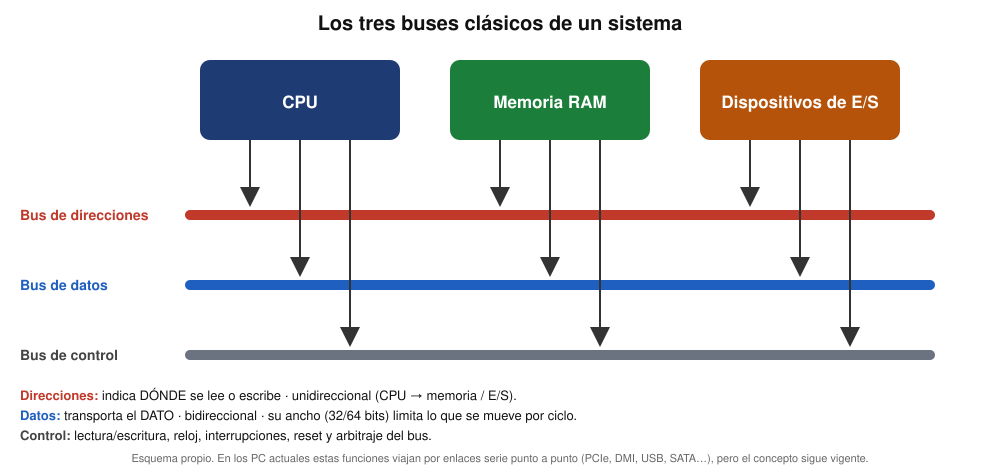
En los PC actuales estas funciones viajan por enlaces serie punto a punto (PCIe, DMI, USB, SATA…), pero el concepto sigue siendo válido: siempre hay que decir con quién se habla, qué se transmite y cómo se coordina.
2.2 Parámetros de un bus¶
| Parámetro | Qué indica | Ejemplo |
|---|---|---|
| Ancho | Número de bits o líneas que viajan a la vez. | Canal de memoria de 64 bits; PCIe x4 = 4 lanes. |
| Velocidad de señalización | Transferencias por segundo (MT/s o GT/s) o frecuencia (MHz). | DDR5‑6000 = 6000 MT/s; PCIe 4.0 = 16 GT/s. |
| Codificación | Bits extra de control; reduce el ancho de banda útil. | 8b/10b (SATA, PCIe 1.0/2.0): 80 % útil; 128b/130b (PCIe 3.0 a 5.0): ≈98,5 %. |
| Ancho de banda | Datos útiles por segundo. | Ver fórmulas siguientes. |
| Sentido | Unidireccional, half‑duplex o full‑duplex. | PCIe y SATA son full‑duplex; I²C es half‑duplex. |
| Latencia | Tiempo hasta que llega el primer dato. | Mucho menor en NVMe que en SATA/AHCI. |
Dos cálculos de ejemplo:
- Memoria: DDR5‑6000 en un canal de 64 bits → 6000 MT/s × 8 bytes = 48 GB/s por canal.
- PCIe 4.0 x4: 16 GT/s × 4 lanes × (128/130) ÷ 8 ≈ 7,9 GB/s por sentido.
2.3 Serie frente a paralelo¶
| Paralelo | Serie | |
|---|---|---|
| Líneas | Muchas líneas de datos a la vez. | Pocas líneas (pares diferenciales). |
| Problema | El skew (los bits llegan desfasados) limita la frecuencia. | Admite frecuencias muy altas y cables más finos. |
| Ejemplos | FSB, PCI, IDE/PATA, bus de memoria DDR. | PCIe, SATA, USB, DMI, Thunderbolt, I²C, SPI. |
La tendencia es clara: los buses paralelos compartidos dieron paso a enlaces serie punto a punto, de modo que cada dispositivo dispone de su propio camino.
2.4 Topologías y control del bus¶
- Bus compartido: varios dispositivos usan las mismas líneas y necesitan arbitraje (PCI, FSB, I²C).
- Punto a punto: un enlace dedicado entre dos extremos, sin compartir (PCIe, SATA, DMI, UPI).
- Árbol con hubs: un host y varios niveles de concentradores (USB).
- Conmutado: un switch reparte enlaces entre varios dispositivos (conmutadores PCIe en servidores y placas con muchas ranuras).
Casi todos los buses tienen un maestro (host, controlador) que inicia las transferencias y uno o varios esclavos (dispositivos) que responden.
3. Mapa de buses de un sistema¶
La CPU integra el controlador de memoria y las líneas PCIe principales; el chipset concentra el resto de la E/S y se enlaza con la CPU por un bus dedicado.

| Bus | Qué conecta | Tipo y topología | Velocidad de referencia | Dónde se estudia |
|---|---|---|---|---|
| Bus de memoria (DDR5) | CPU ↔ módulos de RAM | Paralelo de 64 bits por canal; canal dedicado de 1–2 módulos | ≈48 GB/s por canal a DDR5‑6000 | Sección 4.2 |
| PCIe de la CPU | CPU ↔ GPU y SSD M.2 de CPU | Serie, punto a punto | PCIe 5.0 x16 ≈63 GB/s por sentido | Sección 5 |
| DMI / PCIe x4 | CPU ↔ chipset | Serie, punto a punto | Intel: DMI 4.0 x8 ≈15,8 GB/s · AMD: PCIe 4.0 x4 ≈7,9 GB/s | Sección 4.3 |
| PCIe del chipset | Chipset ↔ M.2, tarjetas, red | Serie, punto a punto | PCIe 4.0 (x1, x2, x4) | Sección 5.3 |
| SATA | Chipset ↔ discos y SSD de 2,5" | Serie, punto a punto | 6 Gb/s (600 MB/s) | Sección 6.1 |
| USB | Chipset ↔ periféricos | Serie, árbol con hubs | 480 Mb/s a 40 Gb/s (80 Gb/s en USB4 v2) | Sección 10 |
| Thunderbolt / USB4 | CPU o chipset ↔ docks, vídeo, datos | Serie, cadena | 40 Gb/s (TB5: 80, con boost 120) | Sección 15 |
| Audio HD (HDA) | Chipset ↔ códec de audio | Serie dedicado | — | Sección 11 |
| SPI / eSPI | Chipset ↔ flash del BIOS, EC, TPM | Serie, maestro‑esclavo | 20–66 MHz (eSPI) | Sección 7 |
| I²C / SMBus | Chipset ↔ sensores, SPD de la RAM | Serie de 2 hilos, compartido | 100 kHz a 3,4 MHz | Sección 7 |
| Infinity Fabric / anillo | Interior de la CPU (chiplets y núcleos) | Interconexión interna | — | Sección 4.1 |
4. Buses entre la CPU, la memoria y el chipset¶
4.1 Del FSB a los enlaces punto a punto¶
Hasta 2008‑2009 la CPU hablaba con el Northbridge por el FSB (Front‑Side Bus): un bus paralelo y compartido, normalmente de 64 bits, con relojes desde 50–66 MHz en los primeros Pentium hasta 400 MHz con quad pumping (1600 MT/s) y un ancho de banda máximo de unos 12,8 GB/s. Todo el tráfico (memoria, gráfica, E/S) competía por él.
Lo sustituyeron enlaces serie punto a punto, mientras el controlador de memoria pasaba a la CPU:
| Bus | Fabricante | Qué conecta | Época y velocidad |
|---|---|---|---|
| FSB | Intel (EV6 en AMD) | CPU ↔ Northbridge | Años 90 – 2009; 64 bits, hasta ≈12,8 GB/s |
| HyperTransport | AMD | CPU ↔ CPU y CPU ↔ chipset | Desde 2001; usado hasta las plataformas AM3+ |
| QPI | Intel | CPU ↔ CPU / controlador de E/S | Desde 2008 (Nehalem); 25,6 GB/s en X58 (suma de ambos sentidos) |
| DMI | Intel | CPU ↔ chipset (PCH) | Desde 2004; por sentido: DMI 1.0 ≈1 GB/s, DMI 2.0 ≈2 GB/s, DMI 3.0 ≈3,9 GB/s, DMI 4.0 x8 ≈15,8 GB/s |
| UPI | Intel | CPU ↔ CPU en servidores Xeon | Desde 2017 (Skylake‑SP); hasta 24 GT/s por enlace |
| Infinity Fabric | AMD | Interior de la CPU (CCD ↔ IOD) y entre CPU de servidor | Desde Zen (2017); no es el enlace con el chipset |
| PCIe x4 | AMD | CPU ↔ chipset | PCIe 4.0 x4 ≈7,9 GB/s |

4.2 Bus de memoria¶
El controlador de memoria está dentro de la CPU, así que la RAM no pasa por el chipset. Cada canal es un bus paralelo de 64 bits (en DDR5, cada módulo se divide en dos subcanales de 32 bits). El ancho de banda máximo es:
ancho de banda por canal = transferencias por segundo × 8 bytes
| Memoria | Por canal | Dos canales |
|---|---|---|
| DDR5‑4800 | 38,4 GB/s | 76,8 GB/s |
| DDR5‑6000 | 48 GB/s | 96 GB/s |
| DDR5‑6400 | 51,2 GB/s | 102,4 GB/s |
Son valores teóricos máximos; el rendimiento real depende de latencias y del tipo de carga. En la unidad 2 se detalla la arquitectura multicanal.
4.3 Enlace entre la CPU y el chipset¶
Todo lo que cuelga del chipset (USB, SATA, red, M.2 del chipset…) comparte un único enlace con la CPU:
- Intel: DMI. En la serie 800, Z890 usa DMI 4.0 x8 (≈15,8 GB/s por sentido) y B860 y H810 usan DMI 4.0 x4 (≈7,9 GB/s).
- AMD: un enlace PCIe 4.0 x4 (≈7,9 GB/s). En X670, X670E y X870E hay dos chips Promontory 21 en cadena que comparten ese mismo enlace.
Consecuencia práctica: un único SSD PCIe 4.0 x4 al máximo (≈7,9 GB/s) llenaría por completo el enlace de una plataforma AMD. Por eso los SSD más rápidos y la GPU se conectan a las líneas PCIe de la CPU, no a las del chipset.
5. PCI Express (PCIe)¶
5.1 Concepto: lane, enlace y ranura¶
PCI Express es el bus de expansión de los PC actuales. Es un bus serie, punto a punto y full‑duplex:
- Lane: dos pares diferenciales (uno para transmitir y otro para recibir), es decir, 4 hilos.
- Link (enlace): conexión entre dos puertos formada por 1, 2, 4, 8 o 16 lanes (x1, x2, x4, x8, x16).
- Ranura: el tamaño mecánico (x1, x4, x8, x16). Una tarjeta más estrecha cabe en una ranura mayor, y una ranura x16 puede funcionar eléctricamente a x4.
- Retrocompatibilidad: cada versión funciona con las anteriores; el enlace negocia la mayor versión y anchura que soportan ambos extremos.
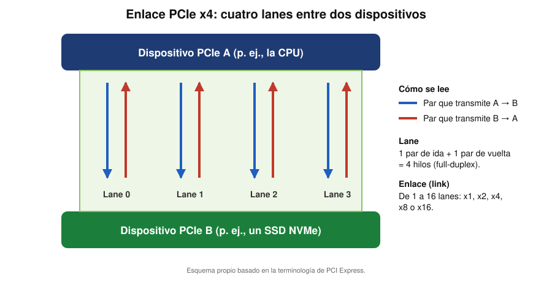

5.2 Generaciones y velocidades¶
| Versión | Año | Codificación | GT/s por lane | GB/s por lane y sentido | x16 (GB/s por sentido) |
|---|---|---|---|---|---|
| 1.0 | 2003 | 8b/10b | 2,5 | 0,25 | 4 |
| 2.0 | 2007 | 8b/10b | 5 | 0,5 | 8 |
| 3.0 | 2010 | 128b/130b | 8 | 0,985 | 15,75 |
| 4.0 | 2017 | 128b/130b | 16 | 1,969 | 31,5 |
| 5.0 | 2019 | 128b/130b | 32 | 3,938 | 63 |
| 6.0 | 2022 (hardware desde 2025) | PAM4 + FEC + FLIT | 64 | 7,563 | 121 |
| 7.0 | 2025 | PAM4 | 128 | 15,125 | 242 |
Estado en 2026: las plataformas de consumo trabajan con PCIe 4.0 y 5.0; PCIe 6.0 tuvo su primer hardware en 2025 y PCIe 7.0 se aprobó en junio de 2025. PCIe 8.0 está anunciada para 2028.
5.3 Reparto de líneas: CPU y chipset¶
- La CPU aporta las líneas más rápidas: normalmente x16 para la GPU y x4 para un SSD M.2.
- El chipset aporta líneas adicionales (x1, x2, x4) para M.2 extra, tarjetas y controladoras; todas comparten el enlace CPU ↔ chipset.
- La bifurcación divide un enlace, por ejemplo un x16 en x8/x8 o x8/x4/x4, para conectar varios dispositivos (GPU + dos SSD).
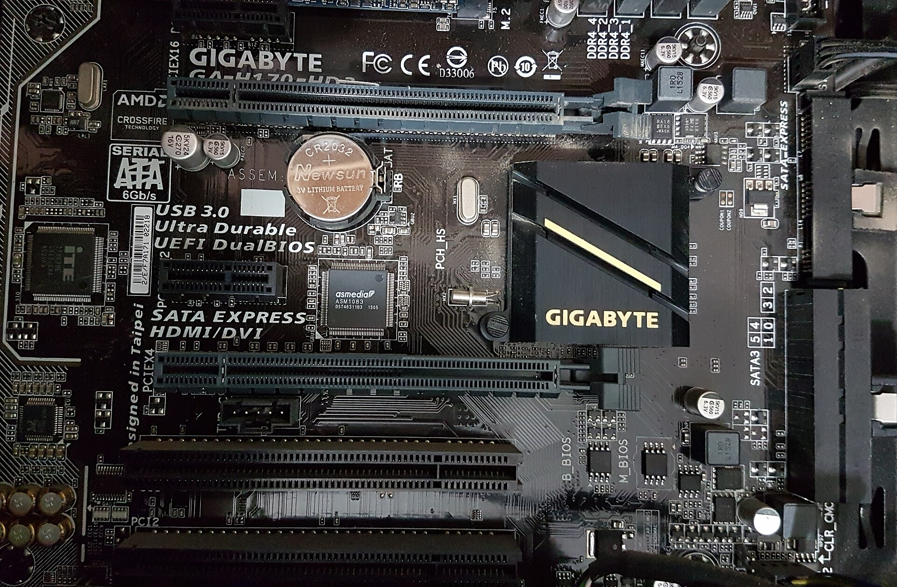
5.4 CXL: PCIe para memoria y aceleradores¶
CXL (Compute Express Link) es un estándar abierto que usa la capa física de PCIe y añade protocolos de coherencia de caché. Permite ampliar memoria y conectar aceleradores en servidores. CXL 1.0 (2019) y 2.0 (2020) usan PCIe 5.0; CXL 3.0 (2022) usa PCIe 6.0.
5.5 Buses heredados: ISA, PCI y AGP¶
| Bus | Tipo | Ancho de banda de referencia | Uso |
|---|---|---|---|
| ISA | Paralelo, compartido | Muy bajo (≈16 MB/s como máximo) | Tarjetas de los primeros PC |
| PCI | Paralelo de 32 bits a 33 MHz, compartido | ≈133 MB/s para todas las tarjetas | Tarjetas de sonido, red, etc. |
| AGP | Paralelo, puerto dedicado a la gráfica | AGP 8x ≈2,1 GB/s | Tarjeta gráfica (sustituido por PCIe desde 2004) |
PCIe los sustituyó porque cada dispositivo dispone de su propio enlace y la velocidad escala con las versiones y las lanes.
6. Buses de almacenamiento¶
6.1 SATA¶
SATA (Serial ATA) es un bus serie punto a punto: un puerto por dispositivo. Sustituyó al antiguo IDE/PATA paralelo.
| Revisión | Año | Velocidad de línea | Codificación | Máximo útil |
|---|---|---|---|---|
| SATA 1.0 | 2003 | 1,5 Gb/s | 8b/10b | 150 MB/s |
| SATA 2.0 | 2004 | 3 Gb/s | 8b/10b | 300 MB/s |
| SATA 3.0 | 2009 | 6 Gb/s | 8b/10b | 600 MB/s |
- SATA 3.1 (2011) añadió mSATA y TRIM en cola; SATA 3.2 (2013) añadió SATA Express y M.2.
- Conector de datos: 7 contactos (3 de masa y 4 de señal); el cable mide como máximo 1 m.
- Conector de alimentación: 15 contactos (3,3 V, 5 V y 12 V).
- Soporta conexión en caliente y NCQ (con el modo AHCI). eSATA (2004) es la variante externa, de hasta 2 m.
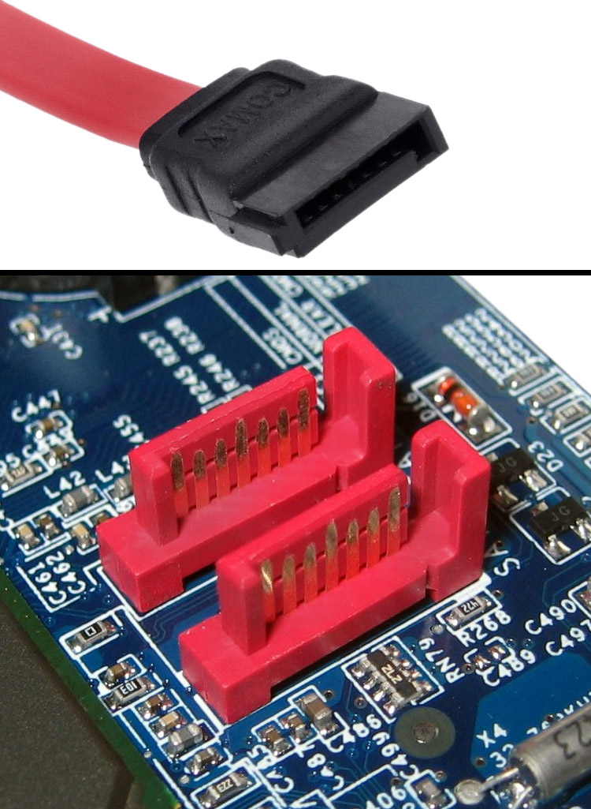

6.2 SATA Express y U.2¶
- SATA Express (SATA 3.2) combina en un mismo conector hasta dos lanes PCIe (hasta 2 GB/s) y es compatible con los conectores SATA. Apenas se extendió y quedó superado por M.2.
- U.2 (SFF‑8639) lleva PCIe x4 y también admite SATA y SAS; se usa en SSD empresariales de 2,5".
6.3 M.2 y NVMe¶
Conviene distinguir tres cosas:
- M.2 es el factor de forma y el conector, no un bus. Según su clave puede llevar SATA, PCIe, USB y otras señales.
- NVMe es el protocolo de los SSD sobre PCIe: baja latencia, colas profundas y mucho paralelismo.
- PCIe es el bus físico por el que viaja NVMe (normalmente x4).
| Clave | Interfaces que lleva | Uso típico |
|---|---|---|
| M | SATA, PCIe x4, SMBus | SSD NVMe |
| B | SATA, PCIe x2, USB 2.0/3.0, audio, SMBus | SSD |
| B+M | SATA, PCIe x2, SMBus | SSD compatibles con ambas |
| E | 2× PCIe x1, USB 2.0, I²C, SDIO, UART, CNVi | Wi‑Fi y Bluetooth |
| A+E | 2× PCIe x1, USB 2.0, CNVi | Módulos inalámbricos |
El tamaño se codifica como ancho × largo en milímetros: 2230, 2242, 2260, 2280 (el más habitual) y 22110.
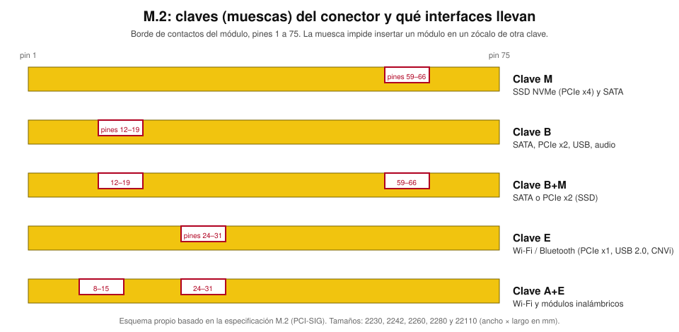


| SATA (AHCI) | NVMe (PCIe) | |
|---|---|---|
| Interfaz | SATA 3.0 | PCIe x4 |
| Velocidad máxima teórica | 600 MB/s | ≈7,9 GB/s (PCIe 4.0 x4) · ≈15,8 GB/s (PCIe 5.0 x4) |
| Protocolo | AHCI (pensado para discos giratorios) | NVMe (pensado para flash) |
| Conector típico | SATA o M.2 clave B / B+M | M.2 clave M, U.2 o tarjeta PCIe |
| Dónde se conecta | Chipset | CPU (más rápido) o chipset |
7. Buses de gestión, arranque y periféricos de baja velocidad¶
No mueven grandes cantidades de datos, pero la placa no arrancaría sin ellos.
7.1 I²C y SMBus¶
I²C usa solo dos hilos: SDA (datos) y SCL (reloj), con resistencias de pull‑up. Es un bus compartido con direcciones de 7 bits, admite varios maestros y tiene varios modos de velocidad: 100 kHz (estándar), 400 kHz (rápido), 1 MHz, 3,4 MHz (alta velocidad) y 5 MHz en modo ultra‑rápido (unidireccional). SMBus es un subconjunto más estricto, definido por Intel y Duracell en 1994.
Usos típicos en un PC: SPD de los módulos de RAM (identifica el módulo), lectura de sensores y gestión de energía, EDID de los monitores y las señales SMBus de las ranuras PCI y PCIe.
7.2 SPI¶
SPI es un bus serie de cuatro hilos: SCLK (reloj), MOSI (maestro → esclavo), MISO (esclavo → maestro) y CS (selección de chip, una por esclavo). Es full‑duplex, no usa direcciones y alcanza decenas de MHz. En un PC se usa para la memoria flash del BIOS/UEFI y otros chips de firmware.
7.3 LPC y eSPI¶
LPC (Low Pin Count) conectaba al chipset el Super I/O, el controlador embebido (EC) y el TPM; funciona a 33 MHz. eSPI lo está sustituyendo: menos pines, 20–66 MHz, alimentación de 1,8 V, modos de datos de 1, 2 o 4 bits y una señal Alert#. Además permite compartir la flash SPI con el host. Los chipsets Ryzen de AMD usan eSPI, y el Z170 de Intel puede configurarse con eSPI o con una variante de LPC.

7.4 Otros enlaces de la placa¶
- HD Audio (HDA): bus serie dedicado entre el chipset y el códec de audio (sección 11).
- UART / RS‑232: comunicación serie clásica y consolas de servicio (secciones 13 y 16).
8. Tabla comparativa de buses¶
| Bus | Tipo | Topología | Velocidad máxima de referencia | Uso principal |
|---|---|---|---|---|
| Memoria DDR5 | Paralelo (64 bits/canal) | Canal dedicado (1–2 módulos) | 48 GB/s por canal (DDR5‑6000) | RAM |
| PCIe 5.0 x16 | Serie diferencial | Punto a punto | ≈63 GB/s por sentido | GPU |
| PCIe 4.0 x4 | Serie diferencial | Punto a punto | ≈7,9 GB/s por sentido | SSD NVMe, enlace del chipset AMD |
| DMI 4.0 x8 | Serie diferencial | Punto a punto | ≈15,8 GB/s por sentido | Enlace del chipset Intel |
| SATA 3.0 | Serie | Punto a punto | 600 MB/s | Discos y SSD de 2,5" |
| USB 3.2 Gen 2x2 | Serie | Árbol con hubs | 20 Gb/s (≈2,5 GB/s) | Periféricos y discos externos |
| USB4 / Thunderbolt 4 | Serie | Árbol / cadena | 40 Gb/s | Docks, vídeo, datos |
| USB4 v2 / Thunderbolt 5 | Serie | Árbol / cadena | 80 Gb/s (120 Gb/s con boost) | Monitores y almacenamiento rápidos |
| I²C | Serie, 2 hilos | Bus compartido | 100 kHz – 3,4 MHz | Sensores, SPD de la RAM |
| SPI | Serie, 4 hilos | Maestro‑esclavo | Decenas de MHz | Flash del BIOS |
| eSPI | Serie | Maestro‑esclavo | 20–66 MHz | EC, TPM, Super I/O |
Las cifras son máximos teóricos por sentido y dependen de la versión, del cable y del dispositivo.
Conexiones físicas: headers y conectores del chasis¶
Los buses anteriores salen de la placa hacia el exterior del equipo mediante conectores. En el resto del tema se estudian los headers que llevan esas señales al frontal del chasis y a brackets: cómo funcionan, cómo se identifican y cómo se montan.
9. Conceptos básicos: qué es un header y qué aporta¶
Un header es un conjunto de pines en la placa base que permite llevar señales y alimentación hacia el frontal del chasis o a brackets que salen al exterior (sin usar el panel trasero). Suelen estar: - Claveados (pin ausente o carcasa con muesca) para evitar inversión. - Serigrafiados con nombres como F_USB1, AAFP, F_PANEL, COM1, TB_HEADER… - Con pin 1 marcado (triángulo, pad cuadrado o serigrafía).
Funcionamiento general: el header actúa como punto de transición entre el PCB de la placa y el cableado hacia el exterior. En enlaces de alta velocidad (USB 3.x/USB4), su diseño conserva impedancia y apantallado; en enlaces analógicos (audio) gestiona masas y retornos para minimizar ruido; en control (F_PANEL) expone entradas/salidas de la PCH/EC.

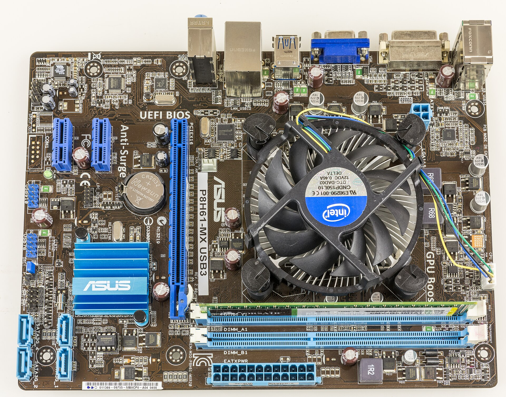
10. USB en placa: headers y funcionamiento¶
10.1 Recordatorio rápido: cómo funciona USB¶
- USB (Universal Serial Bus) es un estándar de conexión para la transmisión de datos y energía entre computadoras y periféricos. Su propósito es simplificar la conectividad y sustituir diversos puertos antiguos por uno universal, facilitando el intercambio y alimentación de dispositivos.
- Topología: host (PC) → hubs → dispositivos (árbol). El host planifica el bus.

10.1.1 Tabla comparativa de versiones USB¶
| Versión USB | Año de lanzamiento | Velocidad máxima teórica | Nombre comercial | Retrocompatible | Características principales |
|---|---|---|---|---|---|
| USB 1.0/1.1 | 1996 / 1998 | 12 Mbps (Full Speed) | USB Full Speed | Sí | Simplifica conexiones, reemplaza legacy |
| USB 2.0 | 2000 | 480 Mbps (High Speed) | USB High Speed | Sí | Muy extendida, mejora energía y velocidad |
| USB 3.0 | 2008 | 5 Gbps (SuperSpeed) | USB 3.2 Gen 1 (antes USB 3.0 / 3.1 Gen 1) | Sí | Más potencia eléctrica, cable azul |
| USB 3.1 Gen 2 | 2013 | 10 Gbps (SuperSpeed+) | USB 3.2 Gen 2 (SuperSpeed USB 10Gbps) | Sí | Doble velocidad, mejor gestión de energía |
| USB 3.2 | 2017 | 20 Gbps (SuperSpeed+) | USB 3.2 Gen 2x2 (SuperSpeed USB 20Gbps) | Sí | Multiplica líneas en USB‑C, todavía cable azul/turquesa |
| USB4 | 2019 | 40 Gbps | USB4 | Parcialmente | Basado en Thunderbolt 3, requiere USB‑C |
| USB4 v2 | 2022 | 80 Gbps (120 Gbps asimétrico) | USB4 v2 | Sí | Duplica la velocidad con señalización PAM3; requiere cables y controladores USB4 v2 |
Las velocidades son máximas teóricas y dependen del cable y dispositivo. USB4 solo funciona con conector USB‑C y permite multitarea y mejor gestión de energía.
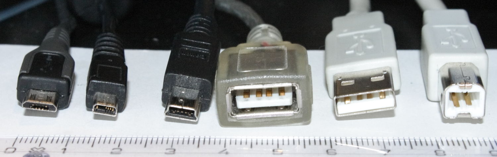
10.2 Header USB 2.0 (9 pines, 2×5 con guía)¶
Para qué sirve: hasta 2 puertos USB 2.0 (dos USB‑A frontales o un USB interno + lector).
Cómo funciona (detalle):
- Cada puerto usa VBUS (5 V) con protección de sobre‑corriente, par D+/D− (diferencial) y GND.
- La guía (pin ausente) evita inversión; el pinout divide el header en Puerto 1 y Puerto 2.
- La placa puede deshabilitar un puerto tras eventos OC# o en suspensión S3/S5.
10.3 Header USB 3.x (IDC 19/20 pines) para 2× USB‑A frontales¶
Para qué sirve: dos puertos frontales SuperSpeed.
Cómo funciona (detalle):
- Integra pares diferenciales SuperSpeed TX/RX por puerto y, además, las líneas USB 2.0 (D+/D−) para compatibilidad.
- El pin 10 figura como ID en la documentación de Intel y algunas placas lo usan como USBOC− (sobrecorriente); el pin 20 no existe (clave).
- Requiere cableado blindado de baja pérdida entre header y módulo frontal.
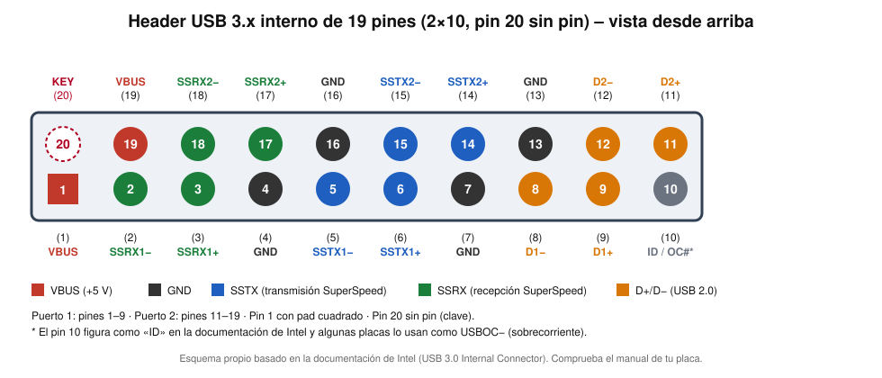
10.4 Header Type‑E (clave A) de 20 pines para USB‑C frontal¶
Para qué sirve: llevar USB‑C al frontal preservando integridad de señal.
Funcionamiento:
- La clave A alimenta 1× USB‑C (SS 10 Gb/s; algunas placas ofrecen 20 Gb/s Gen 2×2).
- El conector blindado y el cable de impedancia controlada minimizan pérdidas y diafonía.
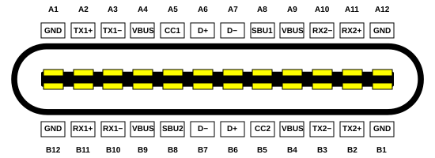
Aclaración: Type‑C ≠ USB4. Para USB4/Alt Modes (DisplayPort/TB), la placa debe incluir controlador y, a menudo, retimers; si no, el Type‑C frontal será solo USB 3.x/2.0.
10.5 USB Power Delivery (PD) en puertos frontales¶
Conceptos clave:
- En USB‑C sin PD, las resistencias Rp/Rd en CC1/CC2 anuncian corriente disponible (Default/1,5 A/3 A a 5 V).
- Con PD 3.0/3.1, Source y Sink negocian PDOs (Power Data Objects): tensión (5/9/15/20/28/36/48 V) y corriente.
- EPR (Extended Power Range) permite hasta 240 W (48 V×5 A) con cable E‑Marker adecuado.
En la práctica en placas: - Algunas placas necesitan un conector de alimentación adicional (consulta el manual) para sostener la carga rápida del Type‑C frontal; los modelos actuales anuncian 30 W (PD 3.0) o hasta 60 W (Quick Charge 4+). - El módulo de la caja puede incorporar controlador PD; otros dependen del controlador de la placa.
10.6 Longitud de cableado interno y signal integrity¶
- Mantén los latiguillos cortos, apantallados, con radio de curvatura generoso.
- Evita extensores sin redriver/retimer a 10–20 Gb/s.
- Asegura masa de chasis y tornillería para reducir EMI.
11. Audio frontal: header HD Audio/AAFP¶
11.1 Para qué sirve¶
Lleva micrófono y auriculares al frontal con detección de jack y conmutación entre salidas frontal/trasera.
11.2 Cómo funciona (detección de jack, muteo y rutas)¶
- El códec (Realtek/otros) usa PRESENCE# y líneas SENSE_SEND/RETURN para saber si hay módulo y jack insertado.
- Al detectar inserción, el driver puede mutear trasera, redirigir flujo a frontal o duplicar (según ajuste).
- Señales de audio salen AC‑acopladas (condensadores) y con cuidado de masas para reducir hum.
- Algunos códecs detectan impedancia de auriculares y ajustan ganancia.
11.3 Pinout típico 10‑1 y recomendaciones de montaje¶
| Pin | Señal | Función |
|---|---|---|
| 1 | MIC_L / PORT1L | Micrófono L (o mono) |
| 2 | GND | Tierra analógica |
| 3 | MIC_R / MIC_BIAS | Micrófono R o polarización |
| 4 | PRESENCE# / control | Detección de módulo |
| 5 | HP_R / FPOUT_R | Auriculares R |
| 6 | SENSE1_RETURN | Retorno de detección del micrófono |
| 7 | SENSE_SEND | Línea de sensado |
| 8 | KEY (sin pin) | Clave mecánica |
| 9 | HP_L / FPOUT_L | Auriculares L |
| 10 | SENSE2_RETURN | Retorno de detección de los auriculares |

Buenas prácticas: usar el cable HD Audio (no AC’97), rutear lejos de VRM y cables de alta corriente, fijar el conector sin tensión.
12. Front Panel (F_PANEL/SYS_PANEL): botones y LEDs del chasis¶
12.1 Para qué sirve¶
Conectar PWR SW, RESET SW, HDD LED, PWR LED, SPEAKER (beeper) y, a veces, CHASSIS INTRUSION al sistema.

12.2 Cómo funciona (lógica, EC/PCH y polaridad)¶
- PWRBTN# y RESET# se leen por el EC (Embedded Controller) o la PCH; un pulso corto ordena S0↔S5 o reset.
- Debounce por hardware/firmware evita rebotes.
- LEDs: respetan polaridad; si no lucen, invertir. HDD LED suele parpadear por actividad SATA/NVMe vía señal del chipset.
12.3 Identificación del pin 1 y orden típico¶
- Header 2×5 con pin 10 a veces ausente (clave).
- El pin 1 se marca con triángulo/pad cuadrado; consulta el manual para el mapeo exacto (varía por fabricante/modelo).
13. COM (serial RS‑232) en header interno¶
13.1 Para qué sirve¶
Exponer DB‑9 en un bracket para equipos industriales, consolas serie, UPS, CNC, routers, etc.
13.2 Cómo funciona y niveles eléctricos¶
- En placas con Super I/O, el header entrega RS‑232 a ±3–15 V (no TTL).
- Velocidades típicas 9600–115200 baudios (8N1).
- Señales de handshake (RTS/CTS, DTR/DSR) permiten control de flujo por hardware.
13.3 Pinout común (2×5, 9 pines activos) y correspondencia DB‑9¶
| Pin header | Señal RS‑232 | DB‑9 | Descripción |
|---|---|---|---|
| 1 | DCD | 1 | Carrier Detect |
| 2 | DSR | 6 | Data Set Ready |
| 3 | RXD | 2 | Recibir |
| 4 | RTS | 7 | Request to Send |
| 5 | TXD | 3 | Transmitir |
| 6 | CTS | 8 | Clear to Send |
| 7 | DTR | 4 | Data Terminal Ready |
| 8 | RI | 9 | Ring Indicator |
| 9 | GND | 5 | Tierra |
| 10 | KEY (sin pin) | — | Clave/ausente |
Es la distribución habitual de los headers 2×5 (DTK/Intel). Existe otra (AT/Everex) con otro orden de pines, y no son intercambiables: comprueba el manual de la placa y del cable.
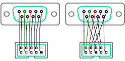
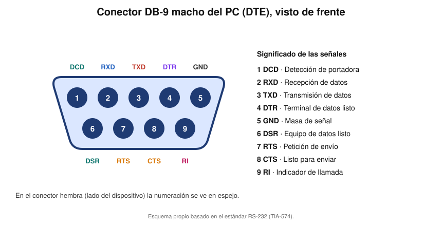
13.4 Cableado recto vs null‑modem y handshaking¶
- Recto: PC ↔ equipo DCE (p. ej., módem).
- Null‑modem: PC ↔ PC (cruza TX/RX y líneas de control).
- Si hay desbordes, activa RTS/CTS o usa XON/XOFF (software).
14. LPT/Parallel (legado) en header 26 pines¶
14.1 Para qué sirve hoy¶
Entornos industriales/legado: impresoras antiguas, instrumentación, PLC. Se saca a DB‑25 mediante bracket.
14.2 Cómo funciona (registros y líneas de control)¶
- Tres registros clásicos: DATA (8 bits), STATUS y CONTROL.
- Líneas STROBE, BUSY, ACK, AUTOFEED, INIT, SELECTIN coordinan la transferencia.
- El header suele ser 2×13 con clave; usa cable plano apantallado.
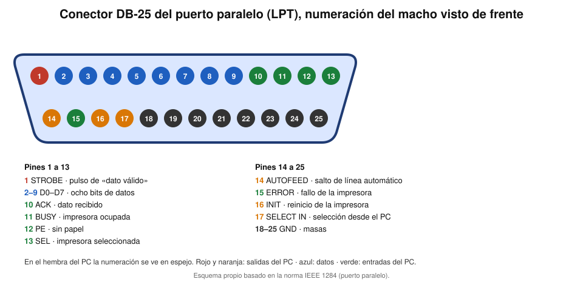
15. Thunderbolt/USB4 headers para tarjetas AIC¶
15.1 Para qué sirven¶
Thunderbolt es una interfaz de alta velocidad para la conexión de periféricos. Permite transferir datos, enviar señal de vídeo y suministrar energía a través de un único cable y conector, combinando los protocolos PCI Express y DisplayPort sobre USB‑C (desde Thunderbolt 3). Sincronizar y controlar una AIC Thunderbolt/USB4. El header (TB_HEADER) no transporta los datos de Thunderbolt ni de USB: lleva solo señales de control (alimentación, estados de reposo, I²C y reset y despertar de PCIe) entre la placa y la tarjeta.

15.2 Cómo funcionan (no son USB de datos)¶
- La AIC se inserta en PCIe y puede enlazar DisplayPort desde la GPU para Alt Mode.
- El header transmite la alimentación forzada, los estados de reposo (S3, S5 y S0 idle), el I²C de gestión y el reset y el despertar de PCIe; sin AIC, el header no habilita USB4 por sí solo.
- Una tarjeta Thunderbolt 4 como la ASUS ThunderboltEX 4 usa PCIe 3.0 x4, el cable del TB_HEADER (14‑1 pines), un cable USB 2.0 (10‑1 pines), una o dos entradas Mini DisplayPort IN (desde la GPU o la salida de vídeo de la placa) y un conector de alimentación PCIe de 6 pines.
- Solo funciona en las placas que tengan ese header y figuren en la lista de modelos compatibles del fabricante, y hay que activar la opción Thunderbolt/USB4 en la BIOS.
15.3 Pinout del header TB_HEADER (14‑1 pines) de la tarjeta Thunderbolt 4¶
El TB_HEADER de 14‑1 pines (13 pines más una clave) es el que usan las tarjetas Thunderbolt 4, como la ASUS ThunderboltEX 4. Su cable lleva solo señales de control: los datos viajan por PCIe (la ranura de la tarjeta) y el vídeo, por los cables DisplayPort IN.
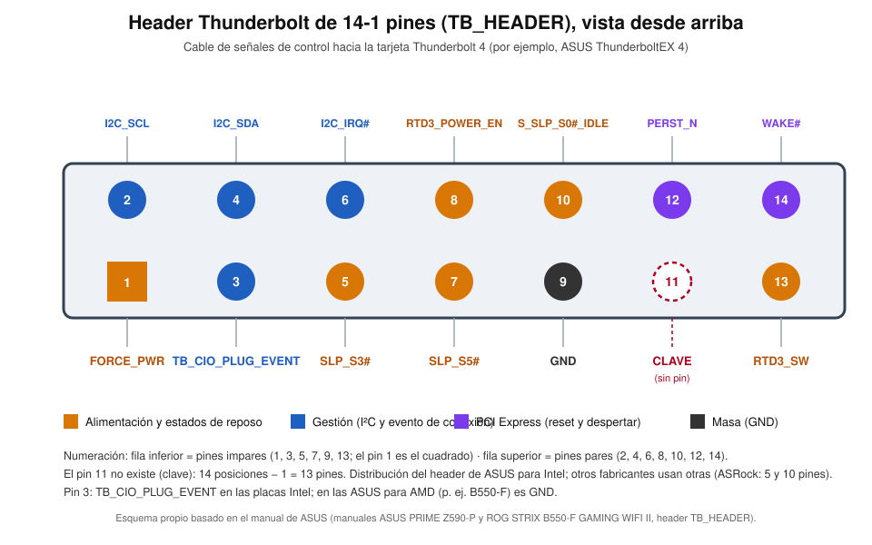
| Pin | Señal | Función |
|---|---|---|
| 1 | FORCE_PWR | Fuerza el encendido del controlador Thunderbolt de la tarjeta. En plataformas AMD se activa con el jumper Force_PWR de la tarjeta (posición 1-2); en Intel se deja flotante (2-3). |
| 2 | I2C_SCL | Reloj del bus I²C de gestión entre la placa y la tarjeta. |
| 3 | TB_CIO_PLUG_EVENT | Evento de conexión (hot-plug) de Thunderbolt: línea auxiliar con la que la tarjeta avisa a la placa de que se ha conectado o retirado un dispositivo, incluso con el controlador apagado. En las placas ASUS para AMD (por ejemplo, la ROG STRIX B550-F) este pin es GND. |
| 4 | I2C_SDA | Datos del bus I²C de gestión. |
| 5 | SLP_S3# | Señal del chipset, activa en bajo: indica la suspensión a RAM (S3). La tarjeta la usa para saber cuándo reducir su alimentación. |
| 6 | I2C_IRQ# | Línea de interrupción, activa en bajo, asociada al bus I²C: avisa de un evento que requiere atención. Por equivalencia con la etiqueta de Biostar (3V3_AIC_PD_INT#), procede del controlador de USB Power Delivery de la tarjeta. |
| 7 | SLP_S5# | Señal del chipset, activa en bajo: indica el apagado suave (S5), en el que se corta la alimentación de lo no esencial. |
| 8 | RTD3_POWER_EN | Señal de habilitación (enable) de la alimentación del controlador cuando se usa RTD3 (Runtime D3): el sistema corta la energía de la tarjeta si está inactiva y la devuelve después (en MSI, «PWR EN» del header JRTD3). |
| 9 | GND | Masa: segundo retorno de las señales. |
| 10 | S_SLP_S0#_IDLE | Indica el reposo profundo SLP_S0# de la plataforma (estado S0ix), en el que la tarjeta debe consumir lo mínimo. |
| 11 | — (clave) | Posición sin pin: evita conectar el cable al revés. Por eso el header es de «14-1» pines. |
| 12 | PERST_N | Reinicio fundamental de PCIe, activo en bajo: mantiene el controlador en reset hasta que la alimentación y el reloj son estables; al subir comienza la inicialización del enlace. |
| 13 | RTD3_SW | Señal relacionada con RTD3 (Runtime D3) que ASUS no documenta; en las tarjetas, el jumper RTD3 define si se usa (por defecto, «sin RTD3»). Su función exacta no está confirmada en una fuente oficial. |
| 14 | WAKE# | Señal de despertar de PCIe, activa en bajo: la tarjeta la activa para sacar al sistema de un estado de bajo consumo, por ejemplo al conectar un dispositivo. |
Notas importantes
- Las señales terminadas en # son activas en bajo.
- Intel no publica la especificación completa del header: los nombres y las posiciones proceden de los manuales de ASUS (PRIME Z590-P para Intel y ROG STRIX B550-F para AMD, que solo difieren en el pin 3), y la función de cada señal, de las definiciones estándar de PCIe y del chipset Intel, del kernel de Linux y de los manuales de MSI y Biostar.
- Otros fabricantes usan otras distribuciones: ASRock emplea un header TBT de 5 pines (y un TB1 de 10 pines en algunas placas) y Gigabyte lo llama THB_C. Comprueba siempre el manual de la placa y usa el cable que acompaña a la tarjeta.
- Las tarjetas de ASRock llevan tres jumpers: Force_PWR (2-3 flotante en Intel; 1-2 fuerza el encendido en AMD), PD_RESET (1-2 fuerza el reset) y RTD3 (3-4 sin RTD3).
15.4 USB4 v2.0 y requisitos prácticos¶
USB4 es el estándar más moderno de USB, basado en Thunderbolt 3 para lograr hasta 40 Gbps de velocidad con conector USB‑C. Ofrece transmisión simultánea de datos y vídeo, además de carga eléctrica avanzada y compatibilidad con dispositivos Thunderbolt ¾.
- Hasta 80 Gb/s (simétrico) o 120/40 (asimétrico, PAM3).
- Requiere cables y retimers de alta calidad; longitudes internas mínimas.
15.5 Tabla comparativa de versiones Thunderbolt y USB4¶
| Tecnología | Año | Velocidad máxima | Conector | Características principales |
|---|---|---|---|---|
| Thunderbolt 1 | 2011 | 10 Gbps | Mini DisplayPort | Datos + vídeo, cadena de dispositivos, cable óptico/cobre |
| Thunderbolt 2 | 2013 | 20 Gbps | Mini DisplayPort | Doble canal de datos, mejora de protocolos |
| Thunderbolt 3 | 2015 | 40 Gbps | USB‑C | Compatibilidad USB‑C, vídeo 4K, carga (100W), PCIe |
| Thunderbolt 4 | 2020 | 40 Gbps | USB‑C | Requisitos mínimos garantizados, 2 pantallas 4K, 100W garantizado, cadena 6 dispositivos |
| Thunderbolt 5 | 2023 | 80–120 Gbps | USB‑C | 80 Gbps bidireccionales, hasta 120 Gbps con Bandwidth Boost, varias pantallas 8K según el equipo |
| USB4 | 2019 | 40 Gbps (máx.) | USB‑C | Basado en Thunderbolt 3, velocidad variable según el equipo, transmisión simultánea de vídeo/datos, compatible Thunderbolt |
Notas: - Thunderbolt 3, Thunderbolt 4 y USB4 usan conector USB‑C; Thunderbolt ½ usan Mini DisplayPort. - Thunderbolt 4 y USB4 (máx.) permiten 40 Gbps, pero TB4 garantiza esa velocidad y criterios mínimos de alimentación (hasta 100W). - Thunderbolt permite conectar (en cadena) hasta 6 dispositivos sobre el mismo cable.
16. Otros headers que exponen funciones al exterior¶
16.1 UART debug (TTL) y service headers¶
- Consola de servicio a 3,3 V; conectar mediante adaptador USB‑TTL (no RS‑232 directo).
- Útil para diagnóstico/recuperación en placas industriales/ITX.
16.2 Conectores de alimentación auxiliar para USB‑C PD alto¶
- Algunas placas añaden un conector de alimentación adicional para sostener 30–60 W en el Type‑C frontal.
- Verifica calibre del cable, protecciones y límites del manual.
17. Procedimiento de montaje y verificación¶
- Planifica: identifica F_USB, TYPE‑E, AAFP, F_PANEL, COM, LPT, TB_HEADER.
- Orientación: localiza pin 1 o clave en header y conector.
- Conecta sin forzar; si no entra, revisa orientación.
- Asegura los cables (bridas/guías) sin tensiones ni dobleces cerradas.
- Pruebas:
- USB: pendrive 2.0 y SSD/pendrive 3.x para validar HS y SuperSpeed; benchmark.
- PD: wattímetro USB‑C; verifica que el cable admite la potencia.
- Audio: mic y cascos; prueba jack‑detect y niveles.
- F_PANEL: encendido/reset/LEDs (invierte si no lucen).
- COM: terminal 115200 8N1; verifica RTS/CTS si procede.
- LPT: loopback o impresión de prueba (si aplica).
- TB/USB4: presencia de la AIC, firmware y pass‑through DP.
18. Diagnóstico de fallos frecuentes¶
- USB frontal lento/no detecta SuperSpeed: cable Type‑E incorrecto, conectado a header Gen 1; ruta larga; falta retimer; interferencias/masa floja.
- USB‑C frontal sin PD/altos W: falta alimentación auxiliar o cable no E‑Marker; límite de la placa.
- Sin audio frontal: conector AC’97 en vez de HD Audio; jack‑detect desactivado; masa mal rutada.
- LED HDD no enciende: polaridad invertida o mapeo distinto al manual.
- COM mudo: confusión RS‑232 vs TTL; BIOS deshabilitado; necesitabas null‑modem.
- TB/USB4 sin funcionar: no hay AIC instalada, falta el cable del TB_HEADER o el de DP in, la opción Thunderbolt/USB4 está desactivada en la BIOS, o los drivers/firmware están desactualizados.
19. Resumen final (ideas clave)¶
- Un bus es un conjunto de líneas y reglas para mover datos; se caracteriza por su ancho, su velocidad, su codificación y su topología.
- Los PC actuales usan enlaces serie punto a punto (PCIe, DMI, SATA, USB): la CPU conecta directamente la memoria, la GPU y los SSD más rápidos, y el chipset concentra el resto de la E/S.
- Todo lo que cuelga del chipset comparte un único enlace con la CPU: DMI en Intel y PCIe 4.0 x4 en AMD.
- M.2 es el conector, NVMe es el protocolo y PCIe es el bus: un SSD NVMe es mucho más rápido que uno SATA porque usa varias lanes PCIe.
- Los buses lentos (I²C, SPI y eSPI) gestionan sensores, firmware y arranque, y los headers del chasis llevan USB, audio, panel frontal y COM: se montan respetando el pin 1 o la clave y consultando el manual de la placa.
20. Créditos de imágenes¶
Las fotografías y esquemas proceden de Wikimedia Commons y se usan respetando la atribución que exige cada licencia. Los esquemas indicados como propios se han elaborado para este tema a partir de la documentación pública de Intel, AMD y de las especificaciones citadas.
| Imagen | Obra original | Autor | Licencia |
|---|---|---|---|
placa_conectores_marcados.jpg |
Asus-ROG-Strix-Z390-F-Gaming-Motherboard mit Markierungen (reducida de tamaño) | PantheraLeo1359531 | CC BY 4.0 |
placa_asus_headers.jpg |
Asus P8H61-MX USB3 - uATX motherboard-6072 | Raimond Spekking | CC BY-SA 4.0 |
usb_conectores.jpg |
Usb connectors | Viljo Viitanen | Dominio público |
usb_c_pinout.svg |
USB Type-C Receptacle Pinout | Chindi.ap | CC BY-SA 4.0 |
front_panel_placa.jpg |
JPANEL MB IMG 1121 | Hans Haase | CC BY-SA 4.0 |
com_header_cableado.svg |
PC MB-COMport wiring | Hans Haase | CC BY-SA 3.0 |
thunderbolt3_puertos.jpg |
Thunderbolt 3 interface USB-C ports | Amin | CC BY-SA 4.0 |
usb3_header_pinout.svg, aafp_pinout.svg |
Esquemas propios basados en la documentación de Intel | Autor del curso | — |
thunderbolt_header_pinout.svg, thunderbolt_header_pinout_slide.svg |
Esquema propio basado en los manuales de ASUS (PRIME Z590-P y ROG STRIX B550-F GAMING WIFI II, header TB_HEADER) | Autor del curso | — |
pci_pcie_ranuras.jpg |
PCI und PCIe Slots | Smial | CC BY-SA 2.0 DE |
pch_ranuras_pcie.jpg |
GigabyteH170-HD3-PCH-and-Slots | TheStriker | CC BY-SA 4.0 |
sata_puertos.jpg |
SATA ports | Berkut | CC BY-SA 3.0 |
sata_alimentacion.jpg |
SATA power cable | FEX | CC BY-SA 3.0 |
nvme_m2_sn850x.jpg |
Western Digital SN850X NVMe solid state drive 8TB front side | 4300streetcar | CC BY 4.0 |
nvme_pcie_tarjeta.jpg |
Intel P3608 NVMe flash SSD, PCI-E add-in card | Dmitry Nosachev | CC BY-SA 4.0 |
bus_direcciones_datos_control.svg, mapa_buses_sistema.svg, evolucion_buses_cpu.svg, pcie_lane_enlace.svg, m2_claves.svg, usb_topologia.svg, i2c_spi_esquema.svg, rs232_db9_pinout.svg, lpt_db25_pinout_es.svg |
Esquemas propios | Autor del curso | — |


21. Fuentes consultadas¶
- PCI Express (Wikipedia): versiones, velocidades y terminología.
- Serial ATA (Wikipedia): revisiones, conectores y SATA Express.
- M.2 (Wikipedia): claves, tamaños y NVMe frente a SATA.
- I²C (Wikipedia): modos, velocidades y relación con SMBus.
- eSPI (Wikipedia): eSPI frente a LPC y SPI.
- Intel Ultra Path Interconnect (Wikipedia) y Front‑side bus (Wikipedia): enlaces entre CPU y chipset.
- Direct Media Interface (Wikipedia): velocidades de DMI.
- Compute Express Link (Wikipedia): CXL y PCIe.
- Socket AM5 (Wikipedia): enlace de AMD con el chipset.
- Manual de la ASUS ROG STRIX B550-F GAMING WIFI II: nombres y posiciones del TB_HEADER.
- Manual de la ASUS PRIME Z590-P: TB_HEADER en plataforma Intel (pin 3 = TB_CIO_PLUG_EVENT).
- Manual de la MSI MPG Z490 GAMING PLUS (JTBT1 y JRTD3): señales FORCE_PWR, SCI_EVENT, SLP_S3#, SLP_S5# y PWR EN.
- Controlador PCIe RTD3 de coreboot (código fuente): función de las señales de habilitación de energía de RTD3.
- ASUS ThunderboltEX 4 (FAQ): conexiones y requisitos de la tarjeta.
- ASRock Thunderbolt 4 AIC (manual): jumpers de la tarjeta.
- Intel, PCH serie 700: señales y planos de alimentación: SLP_S3# y SLP_S5#.
- Low Power Idle Table (documentación de Linux): SLP_S0# y el estado S0ix.
- Texas Instruments, señales PERST y WAKE de PCIe: reset y despertar de PCIe.
- HyperTransport (Wikipedia): año de introducción y uso en las CPU de AMD.
- Intel QuickPath Interconnect (Wikipedia): año y velocidad de QPI.
- Conventional PCI (Wikipedia): ancho de banda del bus PCI.
- Accelerated Graphics Port (Wikipedia): velocidades y retirada de AGP.
- Industry Standard Architecture (Wikipedia): ancho de banda de ISA.
Fecha de actualización: 10/11/2026